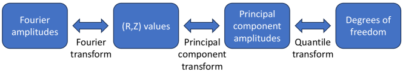

选取理由 这篇虽然不是学习式控制，但它把“先把设计空间变成更适合优化的坐标系，再做贝叶斯搜索”讲得很扎实。对聚变设计问题，这是比单纯讨论优化器名字更有可迁移性的增量。
研究背景
由原简报的核心问题、选取理由和相关性整理，不替代原文背景综述。
现代 stellarator 设计通常直接优化等离子体边界的 Fourier 参数，但这种参数化方式对 Bayesian optimization 并不友好。参数边界难设、尺度不一致、稍微放宽约束就容易导致边界自交或平衡求解失败；若约束收得太紧，又会严重限制可表达设计空间。于是，很多优化难点其实出在“参数空间本身就不适合搜索”。
核心问题 能否先利用已有 stellarator 设计数据，把原始 Fourier 参数空间重构成更适合做带界约束和并行贝叶斯优化的低维、尺度更一致的新空间，从而提升 alpha-particle confinement 优化效率？
对当前主题的关键意义在于：如果你后面做装置设计参数搜索、代理模型辅助 BO，甚至做控制参数整定，这篇都值得借鉴。它说明在把 BO 或学习方法真正落到聚变问题上之前，先做数据知情重参数化，往往比直接上更复杂的优化器更有效。
方法与关键创新

Figure 2: Transformation pipeline between boundary Fourier amplitudes and PCA degrees of freedom.
作者提出两种 data-informed 参数空间。第一种对现有 stellarator 边界数据集中每个 Fourier 自由度做分位数变换，把变量映射到 [0,1] 上的均匀分布；第二种先对边界点做 PCA，再配合分位数变换，把优化变量同时变成有界、尺度相近且更低维的表示。随后，论文在优化环中直接结合 guiding-center tracing 和异步并行 Bayesian optimization，验证这些新空间是否真能支撑高质量快离子约束搜索。
实验结果 论文显示，两种新参数空间都能显著改善优化可行性，而 PCA + quantile transform 路线还带来额外的降维收益，在较少自由度下仍保持较高表达力。作者最终得到若干具有优良快离子约束性能的 stellarator 配置，而且这些配置不必强行接近准轴对称或准等动力学结构，说明该搜索空间对设计多样性更友好。
局限性 这篇工作聚焦 stellarator 边界优化，不是 tokamak 控制或学习式 surrogate；它的方法更多是“让优化空间更可用”，而不是直接用神经网络学习复杂等离子体映射，因此与当前主线里的神经算子、诊断模型、控制器设计仍有一定距离。
总结 这篇论文最重要的不是“又有一个聚变优化结果更好”，而是指出高质量离线搜索往往先要解决参数化问题。对复杂科学设计任务，找到更自然的参数空间本身就是一半胜负。
研究相关性与启发 如果你后面做装置设计参数搜索、代理模型辅助 BO，甚至做控制参数整定，这篇都值得借鉴。它说明在把 BO 或学习方法真正落到聚变问题上之前，先做数据知情重参数化，往往比直接上更复杂的优化器更有效。